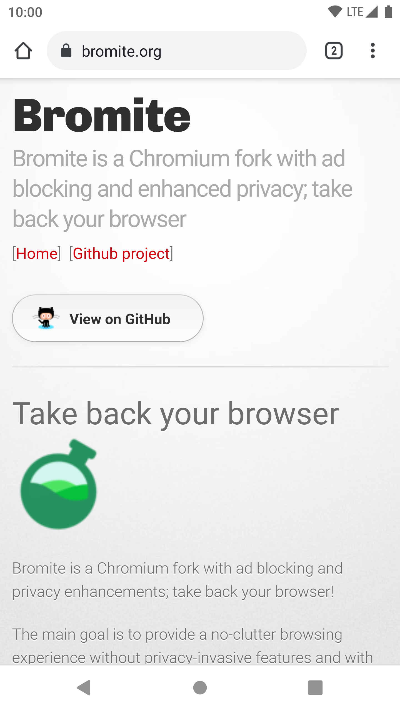

反饋與貢獻
簡單的
對 privacy.noarch 有意見嗎？想要協助編寫 privacy.noarch 嗎？
加入我們的 Telegram 群組!
直接的
你也可以直接為 privacy.noarch 編寫文章！
與 git 和 GitHub 互動
privacy.noarch 主要使用 Markdown 編寫並用 mdBook 生成網頁。
它還用 git 進行版本管理，並同時擁有自託管 cgit 和 GitHub 兩個映象。
除了加入 privacy.noarch 的 Telegram 群，你可以在 GitHub 開 Issues 提意見。
如果你想自己修正 privacy.noarch 的錯誤，或是為它寫一篇文章，自己修改然後開個 Pull request 則是更直接的方法！
文字格式
Markdown 語法
為了人類可讀性和編寫的便捷，Markdown 的語法很靈活：很多不同的語法可以帶來相同的結果。noarch 為了最大化文章的可讀性和格式的統一，擬定了一個 Markdown 語法使用規範：
| 效果 | 格式 |
|---|---|
| 標題 | #, 僅在行首使用 |
| 斜體 | * |
| 粗體 | ** |
| 加粗斜體 | *** |
| 列表 | - |
程式碼塊 | ``` |
| 分割線 | --- |
文法與語氣
noarch 原本想盡量接近“維基”的語氣和文法，但在寫作的過程中發現使用第二人稱、貼近日常生活的語氣更加親切。
請不要大量使用幽默，或是使用可能帶來誤導的幽默，以保證讀者都能正確遵循指導。
請僅在必要時使用第一人稱和第三人稱代詞，並用名字代替它們（這是一個必要的使用）；第二人稱使用“你”。
標點與空格
- 標點的全 / 半形跟隨其前面的字元：
This is an English semicolon; 這是中文的句號。 - 雙對標點的全 / 半形跟隨其包含的字元，雙對標點的全 / 半形跟隨其第一個標點：
括號 (bracket); bracket（括號）；(bracket / 括號). - 在中文裡使用半形標點需適當地加空格：
標點 / 標點 / punctuations 括號 (bracket) - 中西文混用，須在西文前後加空格（行中第一個字元除外）：
在中文裡使用 English 需要在英文前後加空格。 - 較大的數須按需加空格：
2前後就不需要加空格； 但 32768 需要。 You also need to add spaces accordingly to 114514. - 使用 Font Awesome 時須在其前後加空格（行中第一個字元除外）：
微笑 後面有一個空格！
圖片的嵌入
路徑
請在對應 Markdown 文字的相同資料夾建立 images 資料夾存放圖片，並使用相對路徑引用圖片：

而不是：

更不是：

如果圖片是在網上找到的，請下載並使用相同方法引用。請勿直接引用外部資源。
大小
請確保豎屏圖片不像這樣“吃掉”讀者的整個螢幕：

Markdown 不具備調整圖片大小的能力，但你可以在 Markdown 裡用 HTML 嵌入圖片並限制大小：
<img alt="bromite-org" src="images/bromite-org.webp" width=450>
上方程式碼的執行效果是這樣：
在程式碼塊中使用 Font Awesome
noarch 找不到好方法來讓 Font Awesome 的引用逃逸 Markdown 的程式碼段 / 塊 ; 於是只好用 html 的 <code> 塊來代替。下面是一個例子：
<code><i class="fa fa-smile-o" aria-hidden="true"></i> 可以被正確顯示。</code>
執行效果是： 可以被正確顯示。
如果包含 Font Awesome 的是一個程式碼塊 ``` , 你需要在 <code> 前後加 <pre> . 例如：
<pre><code><i class="fa fa-smile-o" aria-hidden="true"></i> 可以被正確顯示。</code></pre>
執行效果是：
可以被正確顯示。媒體格式
請使用這個列表中列出的開放格式。這樣可以保證讀者不需要為閱讀 privacy.noarch 付任何直接或間接的版權費。使用開放格式同時也是一種推廣它們的方式。
點陣圖請儘量使用 WEBP 格式編碼，以加快頁面載入速度；如果轉載或擷取的原圖非 WEBP, noarch 建議你把它們轉換成無失真壓縮的 WEBP.
下面是 noarch 在 GNU/Linux 上使用 ImageMagick 批量將 .jpg 和 .png 轉換成無損 .webp 的 one-liner:
$ mogrify -format webp -define webp:lossless=true *.png && rm *.png && mogrify -format webp -define webp:lossless=true *.jpg && rm *.jpg
視訊請使用開放的 WEBM/VP9 格式編碼；這樣能在保證質量和播放效能的同時最大程度降低大小。
請不要使用付費的 HEVC (H.265) 或 AVC (H.264) 格式編碼視訊。一些完全自由的瀏覽器將無法播放這些視訊。
關於使用 ffmpeg 將視訊轉碼成 VP9, 請看FFmpeg 官方文件。
版權和引用
請在進行任何非原創引用時檢查來源的版權資訊，並註明來源。
在引用維基百科條目解釋名詞時，除非中文版條目質量非常接近英文版，否則請引用英文版條目。noarch 很遺憾需要這麼做，因為中文版維基百科在隱私和計算機領域的條目可參考性還有很長一段路要走。
不過，如果你為 privacy.noarch 翻譯了英文版維基百科的條目，請把它貢獻回中文版維基百科的對應條目，讓它們在艱難的環境下也能成長！
還有疑問？
別猶豫，去 privacy.noarch 的 Telegram 群組提問！